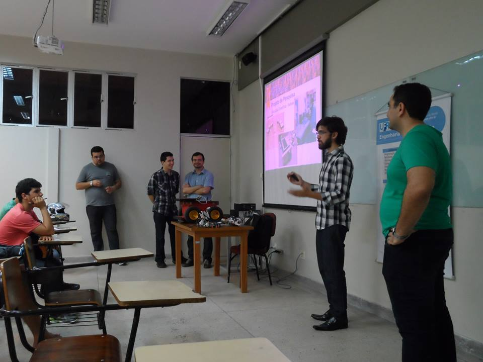
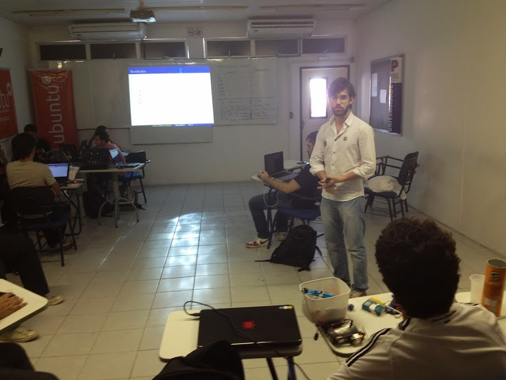

Event talks given so far ;)
X Latin-American Free Software Conference (Latinoware 2013)
Fedora: Sharing thoughts, experiences and passion.

Cachaça Filósifca (October edition, 2013)
Influences of software freedom in the indstry and other areas of the knowledge
Software Freedom Day Natal (2013) + 30th GNU Anniversary
Fedora Contributions to the FOSS Community of nowadays
Programação cultural da I Festa de Visuais da UFRN (September 2013)
How Free Software influenced the industry and other areas of the knowledge
I ENSOL Vale do Açu + F19 RP (2013)
Fedora 19 Release Party (Amador's house) (2013)
Fedora: Sharing thoughts, experiences and passion
Fedora 19 Relase Party - Instituto Khipu (2013)
Fedora: Sharing thoughts, experiences and love
Fedora 19 Release Party - Universidad Alas Peruanas Filial Cusco (2013))
Fedora: Sharing thoughts, experiences and love
2nd Natal Hackerspace Meeting (2013)
Fedora: Run, Contribute and join the community!
UFRN's Professions Exhibition (2013)
Academic Research in Computer Engineering


Opening Hangout of the PotiLivre Community Project (2013)
FLISOL [UNP] (2013)
OpenPACS: Managing medical images with Free Software

Talk a bit: Transformation through Information [UFPE] (2012)
Computer Multidisciplinarity: From Free Software to Biomedical Engineering

FLISOL (2009)
Free Software: The essence of the movement
VIII Seminar of Informatics and Computer Engineering [UFRN] (2007)
GNU+Linux: Strong GNU (arm) , Friendly Linux (hand). Is there colaborativity?
III Semana de Software Livre [UFC] (2007)
Free Software: Versatility, Productivity and Security

FLISOL / I Bienal of Informatics of Rio Grande do Norte (2007)
Taking the pinguim to your day to day: Necessiies of a Desktop environment with Free Software